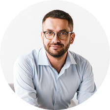

Жюри «Невские Звезды»

Панфилов Виталий Геннадьевич
В жюри с 2018 года
- Выпускник Новгородского Музыкального училища по специальности "Дирижер хора, учитель музыки", Санкт-Петербургской Государственной консерватории им. Н.А. Римского-Корсакова по специальности "Оперный, концертный певец", аспирантуры Санкт-Петербургской Государственной консерватории по специальности "Музыкальное искусство"
- Лауреат Международного конкурса, дипломант национальной театральной премии и фестиваля "Золотая маска"
- Исполнитель партий на сцене музыкального театра Санкт-Петербургской консерватории, Большого зала Санкт-Петербургской филармонии и сцене Большого театра.
Курчевских Наталья Владимировна
В жюри с 2018 года
- Балетмейстер Санкт-Петербургского Музыкально-Драматического театра. Эксперт проекта «Созидатели» в конкурсе на предоставление грантов Президента РФ. Руководитель Студии сюжетного танца «Па-Де-Бург».
- Номинант Международной премии «За профессиональное мастерство».
- Автор экспериментального методического пособия «У принцессы первый бал» (программа не имеет аналогов и пользуется популярностью у педагогов-хореографов РФ и за рубежом).
-
- Наставник в воскресной школе Смолянок и Пажеского корпуса в СПб-Центре Благородного воспитания.
- С отличием закончила кафедру хореографии СПбГУП. Педагог высшей квалификационной категории. Стаж работы по специальности более 30 лет. Является постановщиком сюжетных детских танцев, преподавателем хореографических дисциплин.
Панфилов Виталий Геннадьевич
В жюри с 2018 года
- Серебряный голос России. Педагог по вокалу высшей категории. Стаж педагогической работы 30 лет. Певица, киноактриса. Лауреат международного телевизионного фестиваля эстрадных исполнителей «Памяти Аркадия Северного», Санкт-Петербург (неоднократно).
- Лауреат международного телевизионного фестиваля эстрадных исполнителей «В джазе только девушки», Санкт-Петербург.
- Лауреат международного конкурса авторской песни «Белые ночи Санкт-Петербурга 2015».
- Лауреат международного музыкального всеформатного фестиваля авторов – исполнителей «Белые ночи Санкт-Петербурга 2016».
- Лауреат музыкального педагогического конкурса «Сольный выход» 2020.
Чубакова Дарья Владимировна
В жюри с 2018 года
- Выпускница консерватории им.Никколо Пуччини (Италия).
- Лауреат международных конкурсов (Россия, Италия).
- Участница Open Opera, Россиниевского оперного фестиваля и Montecatini opera festival. Украшение большого зала филармонии им. Д. Д. Шостаковича и БКЗ "Октябрьский".
Артём Уланов
В жюри с 2018 года
- Автор-исполнитель, актёр. Обладатель диплома «Песня года 2008».
- Участник шоу «Голос» и фестиваля "Нашествие".
Сигаев Егор Сергеевич
В жюри с 2018 года
- Выпускник Новгородского Музыкального училища по специальности "Дирижер хора, учитель музыки", Санкт-Петербургской Государственной консерватории им. Н.А. Римского-Корсакова по специальности "Оперный, концертный певец", аспирантуры Санкт-Петербургской Государственной консерватории по специальности "Музыкальное искусство"
- Лауреат Международного конкурса, дипломант национальной театральной премии и фестиваля "Золотая маска"
- Исполнитель партий на сцене музыкального театра Санкт-Петербургской консерватории, Большого зала Санкт-Петербургской филармонии и сцене Большого театра.
Курчевских Наталья Владимировна
В жюри с 2018 года
- Выпускник Новгородского Музыкального училища по специальности "Дирижер хора, учитель музыки", Санкт-Петербургской Государственной консерватории им. Н.А. Римского-Корсакова по специальности "Оперный, концертный певец", аспирантуры Санкт-Петербургской Государственной консерватории по специальности "Музыкальное искусство"
- Лауреат Международного конкурса, дипломант национальной театральной премии и фестиваля "Золотая маска"
- Исполнитель партий на сцене музыкального театра Санкт-Петербургской консерватории, Большого зала Санкт-Петербургской филармонии и сцене Большого театра.
Панфилов Виталий Геннадьевич
В жюри с 2018 года
- Выпускник Новгородского Музыкального училища по специальности "Дирижер хора, учитель музыки", Санкт-Петербургской Государственной консерватории им. Н.А. Римского-Корсакова по специальности "Оперный, концертный певец", аспирантуры Санкт-Петербургской Государственной консерватории по специальности "Музыкальное искусство"
- Лауреат Международного конкурса, дипломант национальной театральной премии и фестиваля "Золотая маска"
- Исполнитель партий на сцене музыкального театра Санкт-Петербургской консерватории, Большого зала Санкт-Петербургской филармонии и сцене Большого театра.